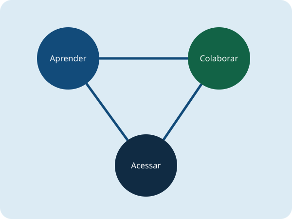

Aprender com autonomia
Conhecimentos básicos para usar computadores, navegar na internet e reconhecer riscos digitais.
A Conecta Comunidade é uma ONG fictícia dedicada à inclusão digital. Neste projeto acadêmico, aprender, compartilhar conhecimentos e reaproveitar equipamentos aproximam pessoas da tecnologia.
Conhecer as iniciativas Quero ser voluntário
Promover autonomia digital por meio de oficinas introdutórias, orientação sobre segurança na internet e colaboração entre quem deseja aprender e quem pode ensinar.
Conhecimentos básicos para usar computadores, navegar na internet e reconhecer riscos digitais.
Mentoria voluntária com atividades práticas e linguagem acessível, respeitando diferentes ritmos de aprendizagem.
Uma proposta de reaproveitamento responsável de equipamentos para apoiar espaços comunitários de aprendizagem.
Explore as iniciativas demonstrativas e experimente o cadastro de voluntários e apoiadores.
Simular meu cadastro